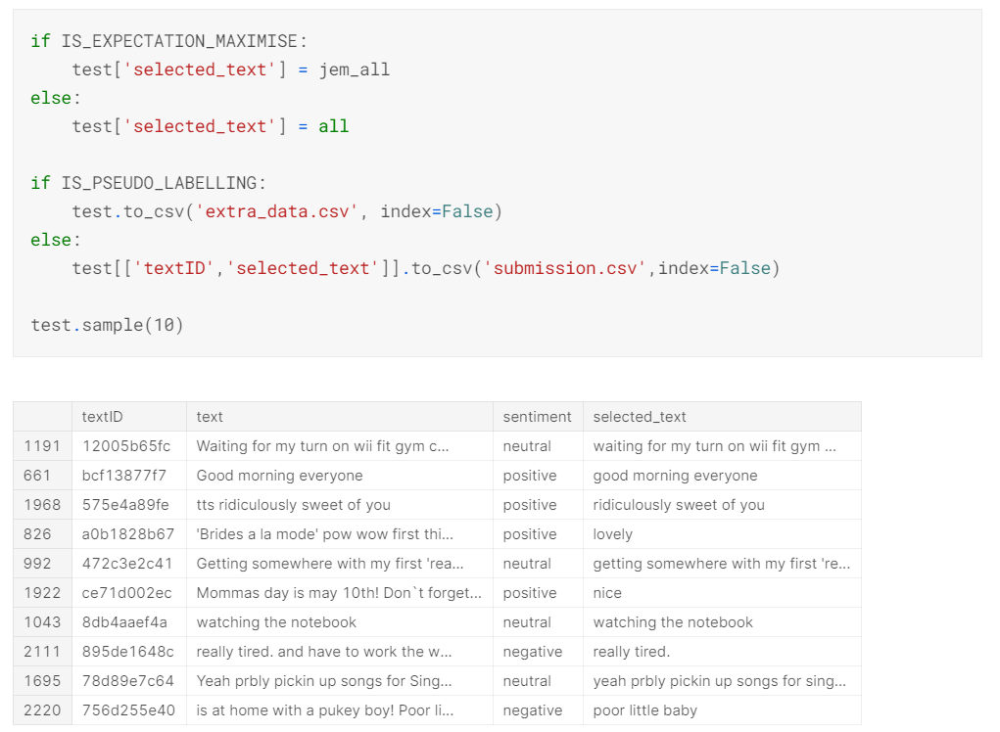

Twitter Sentiment Extraction Challenge
DateApril 2020 - June 2020
RoleSolo Project
TechnologiesPython, Keras, Tensorflow
DescriptionThis Kaggle competition involved predicting the substring that highlights a given sentiment, across a dataset of thousands of tweets. I used the roBERTa transformer, alongside several machine learning tricks, to finish 558th out of over 2000 competitors in this competition.

Features
- Extraction of substring based on given sentiment
- roBERTa transformer with CNN head
- Data augmentation and pseudo labelling
- Pre- and post-processing of data
Questions
The aim of the competition was to create a model that could extract the part of a tweet that highlighted a particular sentiment (positive, negative, neutral), given the tweet and its sentiment.
I finished 558th out of 2,227 teams with a private leaderboard score of 0.71572. My best submitted model from this notebook actually scored 0.71770 which would have put me in the top 100 (and earned me a silver medal) but I ultimately did not choose that submission for the final evaluation due to the low cross-validation and public leaderboard score.
I used several different techniques that can be seen in my working notebook, including:
- Pseudo labelling
- Post-processing
- Getting best logits
- Predicting the training dataset
- URL substitution
- Synonym data augmentation
- Adding extra tokens
The data was very noisy; this was obvious to anyone who competed in the competition as some substrings did not contain whole words. Dealing with this noise was difficult. The top teams managed to deal with the noise by adding a character-level model on top of their main transformer to help with predicting the substring along with added noise. This helped many teams achieve a better score, so I would attempt this if the competition was rerun.